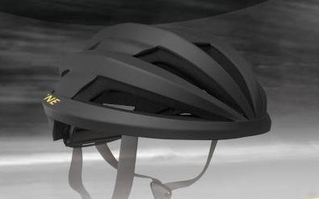
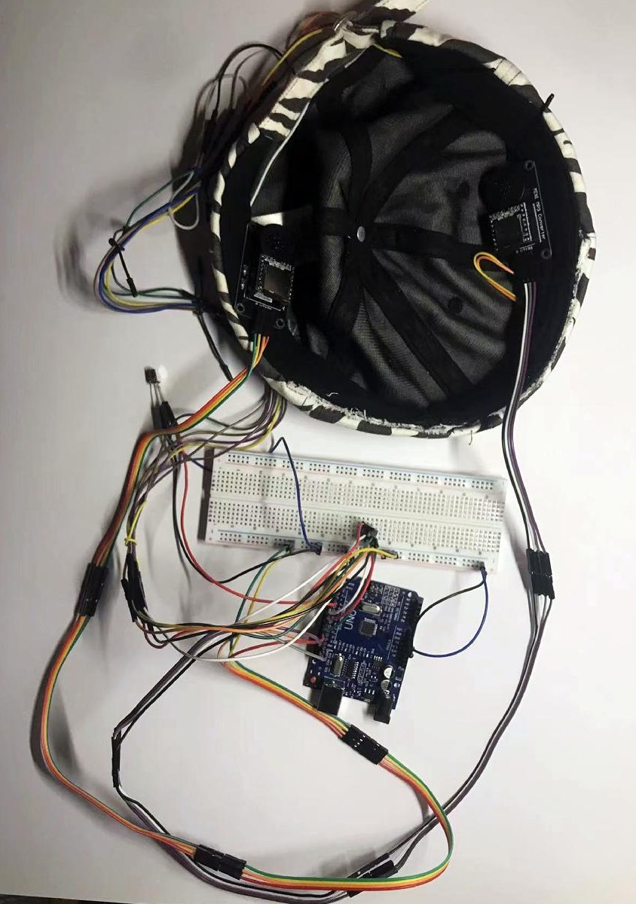

Undergraduate thesis · 2024
Haptic Cycling Navigation
A helmet-based approach to navigation through touch.

This undergraduate thesis explores cycling navigation through a helmet that combines directional vibration with voice cues. The design translates navigation instructions into tactile patterns and pairs the helmet concept with a mobile app for route planning, aiming to reduce the need to look at a screen while riding.
Guided by user interviews and a questionnaire, I developed the helmet form, app interface, and tactile cue patterns, then built a physical model and an Arduino-based prototype. Exploratory testing in simulated-use conditions informed the interaction design and identified considerations for future road testing. The project brings product design and functional prototyping together to explore navigation with less reliance on visual prompts.

